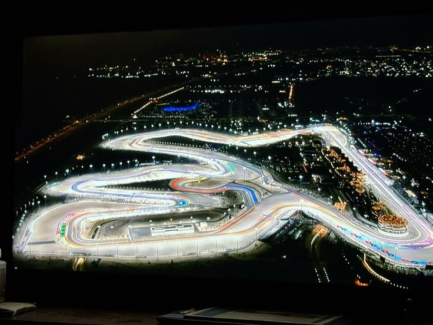

Lusail International Circuit

Technical Details
Location: Lusail, Qatar
Length: 5.419 km
Laps: 57
First GP: 2021
Curiosities
The Lusail International Circuit was originally built for motorcycle racing before joining Formula 1 in recent years. It is known for its modern facilities and night racing under floodlights. The track features flowing corners and high-speed sections that reward aerodynamic efficiency. It marked Qatar’s entry into the global F1 calendar as part of its long-term motorsport investment.